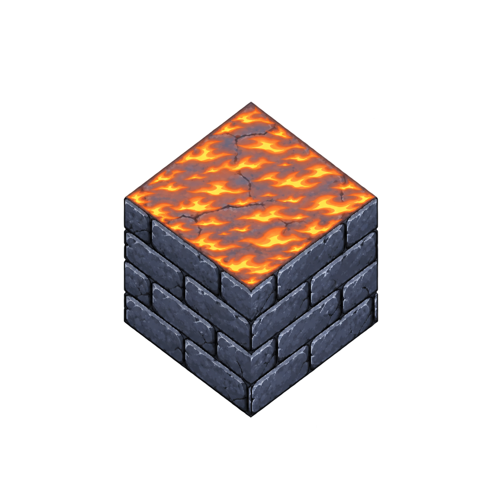

Небольшой изгиб кончика и возврат, без новых струй и искр. Камень и остальные мазки неподвижны. Сравните форму с исходником в масштабе тайла и на крупном фрагменте.
Это проверка одного языка, ещё не анимация всего тайла. В игру не подключено.

Использованы только готовые прозрачные кадры PixelLab, выбранные и повторённые в плавном порядке. Они показываются поверх неизменённого исходника в постоянной позиции. Новые промежуточные позы не рисовались. Порядок и SHA кадров · Проверки и ограничения · Кандидаты шипов.